FOS – Focus on Solutions
FOS – Focus on Solutions
Evidenzbasierte, psychologisch fundierte Beratung für Unternehmen, Führungskräfte und Teams
Jetzt Erstgespräch vereinbaren


 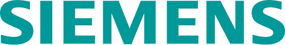
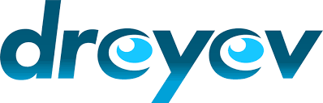
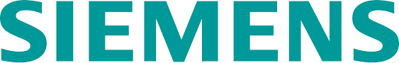
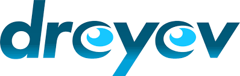

 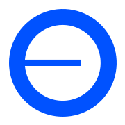
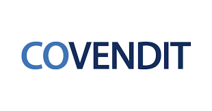
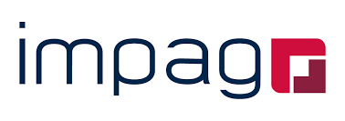
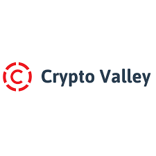
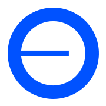
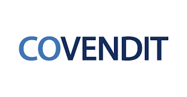
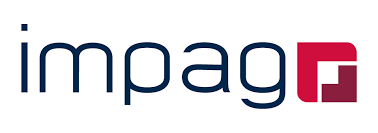
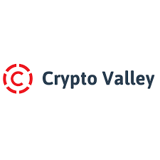

 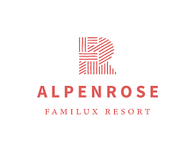
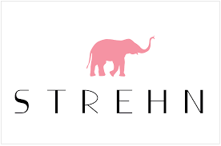
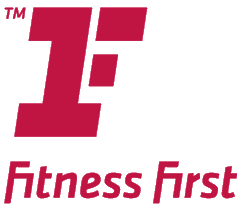
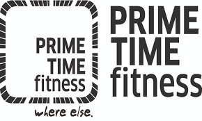
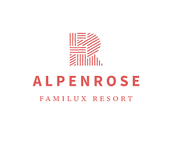
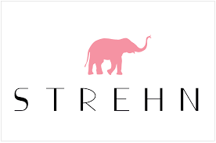
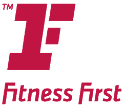
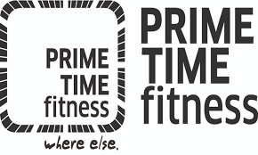
Das sagen unsere Kunden
What our clients say
Erfolgsgeschichten von Führungskräften und Unternehmen, die mit FOS nachhaltige Verbesserungen erzielt haben
🎓 EDUQUA-Zertifiziert
Schweizer Qualitätsstandard für Weiterbildung – Ihr Vertrauen ist unser Antrieb
Qualitätsmanagement
Systematische Qualitätssicherung nach Schweizer Bildungsstandards mit kontinuierlicher Evaluation und Verbesserung.
Qualifizierte Dozenten
Alle Trainer verfügen über wissenschaftliche Qualifikationen und langjährige Praxiserfahrung in der Unternehmensberatung.
Nachweisbare Ergebnisse
Regelmäßige Evaluation und Messung der Lernerfolge mit transparenten Berichten über die erzielten Verbesserungen.